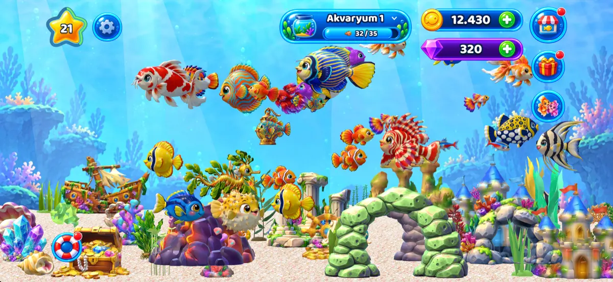
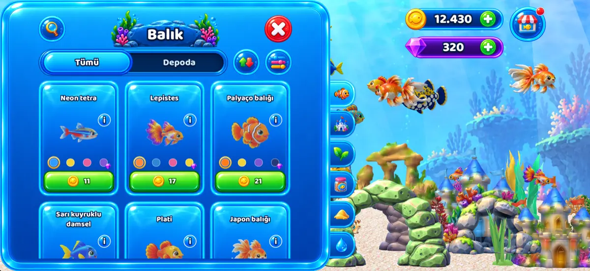
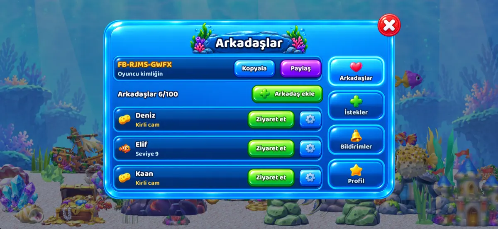
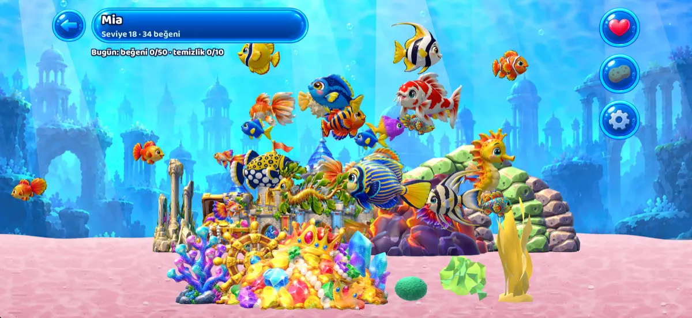

Fishburg
Gerçek zamanlı bir 3D akvaryumda balık bakımı üzerine rahatlatıcı bir oyun. Balık yumurtası al, yumurtadan çıkmalarını izle ve her balığı yavrudan yetişkine kadar büyüt. Balıklarını zamanında besle, camı süngerle temizle, büyüyen balıkları altın ve XP karşılığında sat. Sonra akvaryumunu istediğin gibi dekore et ve arkadaşlarının akvaryumlarını ziyaret et.
Yakında “Fishburg: Aquarium” adıyla App Store’da (iPhone ve iPad) ve Google Play’de (Android telefon ve tabletler)

Kendi 3D akvaryumunda balıkları yumurtadan yetişkine büyüt. 
Mağazadan yeni balıklar, süsler ve bitkiler seç. 
Oyuncu kimliğiyle arkadaş ekle. 
Akvaryumlarını ziyaret et, beğen ve camlarını temizle.
- Kendi temponda balık bakımıDakikalar içinde büyüyen hızlı balıklardan günler süren nadir türlere kadar 22 balık türü ve ek renk çeşitleri. Dört yem, XP için sevgi, eşleştirme ve balıklarına isim. Oyun kapalıyken de zaman işler.
- 3D akvaryumunu dekore etKeşiş yengeci, yavru ahtapot ve denizyıldızı gibi canlı süsler dahil 34 süs ve 22 bitki; 9 su manzarası ve 10 çeşit kum. Düzenleme Modu’nda her parçayı taşı, döndür, çevir ve boyutlandır.
- 5 akvaryuma kadarHer akvaryumun kendi balıkları, süsleri ve adı var.
- Arkadaşlarınla oynaOyuncu kimliğiyle arkadaş ekle, akvaryumlarını ziyaret et, beğen ve camlarını temizle. Sohbet yok; hesabını istediğin zaman silebilirsin.
- Hedefler ve ödüllerHer biri yeni bir şey açan 50 seviye, günlük görevler, ödül sandığı, bedava hediye, giriş takvimi ve 8 seride 40 Ödül.
- Üyelik yokE-posta yok, parola yok. Akvaryumun cihazında kayıtlıdır; sunucumuzda da bir yedeği tutulur. İsteğe bağlı hatırlatmaların her biri kapatılabilir.
Telefonda ve tablette yatay ekranda; Türkçe, İngilizce, Almanca, İspanyolca, Fransızca ve Brezilya Portekizcesi ile oynanır. Fishburg reklam ve uygulama içi satın alımlar içerir. Reklamları Kaldır otomatik tam ekran reklamları kapatır; ödüllü reklam izlemek her zaman senin tercihin.
Yardım ve yasal bilgiler
Bir sorun mu var, yoksa bir balık laf mı dinlemiyor? Bize fishburg.sandbox@outlook.com adresinden yaz.